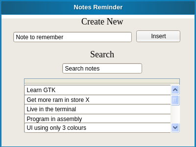

In the past people said 64kb of RAM was enough to do anything. Today we use almost 2GB of RAM just to have our machine running. Programmers keep making each program bigger than the old ones, like all the machines have 64GB of RAM. This leads to the need of constantly getting new hardware, because it looks like our machines are getting slower over time. But the main problem is that the programs are more inefficient!
Even systems like ubuntu desktop and kubuntu still take between 700MB to 1GB of RAM to be up and running. Its a huge difference if we compare it with something like a basic install of an OpenBSD server, which takes only 20MB of RAM. Of course this comparison is not fair, we are comparing a server which has a command line interface against a distro with a full desktop environment. But if that is the main diffence that makes the system use 35x more RAM, we must try to reduce as much as we can.
So the focus of this text will be to create a benchmark on the multiple available graphical stacks so we can understand better what exists, and how we could reduce RAM usage to get better and more durable systems.
I have bad memory, so usually when I find something nice I write it in some note taking app. But I don't like needing to have some app open that I'm not using most of the time and when searching most of the note apps are not good to search by keyword.
So last year I implemented two simple shell scripts one to remember a note(remember) and another to search for some keyword in all my notes(remindme).
We will be using these scripts as backend so the UIs that will be implement only need to have their necessary UI construction code.
Now I present the code and structure for these scripts:
The objective of the remember script is to allow me to just type remember 'Found cool tech - www.tec.com' and store the note.
It receives a string and stores it in a file. If the user does not supply any argument, the program will wait for the user input and will store the note when Ctrl + D is pressed.
#!/bin/bash # remember -- An easy command line based reminder pad {Remember File, 2} {If No Arguments, 2} # Prompt the user for input and append to the rememberfile whatever they wrote. echo "Enter note, end with ^D: " cat - >> $rememberfile else # Send any arguments passed to the script into the remeberfile. echo $@ >> $rememberfile fi exit 0
The objective of the remindme command is to filter and display notes taken with the remember command.
It verifies if the rememberfile already exists and displays a warning if not. If the user passed arguments when calling the script it will filter lines in the remember file according to the keywords. If no arguments were passed it displays all the file.
#!/bin/bash # remindme -- Searches a data file for matching lines or, # if no argument is specified, shows the entire contents of the data file {Remember File, 2} if [ ! -f $rememberfile ] ; then echo "$0: You don't seem to have a .remember file." >&2 echo "To remedy this, please use 'remember' to add reminders" >&2 exit 1 fi {If No Arguments, 2} # Display the whole rememberfile when not given any search criteria. more $rememberfile else # Otherwise, search through the file for the given terms, and display the results neatly grep -i -- "$@" $rememberfile | ${PAGER:-more} fi exit 0
The remember file will be an hidden file called .remember in the current user personal directory.
Validation to check if no arguments were received.
In order to have the same base for each test we need to define the needed features for each program and what will be evaluated.
Since each pixel will occupy memory, the application window will be set to a fixed size of 400x300. The application must have an input field to receive the notes, one button to submit them, a table list area to display the results and a search input to filter the list results for the current text in the search box. We can observe this structure in the following mockup.

For each application we will measure:
With the benchmark methodology already defined now we need to select the graphical stacks to be tested and compared.
First we will check the common more feature full graphical stacks which are used in most of the systems:
Then try the more lightweight alternatives:
Finally use directly the system API's:
Since we want to see the real memory usage of each graphical stack we will try to make most of the implementations using a compiled language without the overhead of any VM. So we will use C or C++ for measuring the memory and for the graphical implementation. If a scripting language is needed for any case, we will chose Lua for that since its VM is really small, between 400kb and 800kb.
Base structure for the benchmarks.
{Measure Includes, 5} int main (int argc, char **argv){ int status = 0; {Graphical Initialization} {Measure Memory, 5} return status; }
Since most of the tests will be done in a Linux environment, to get the current process memory we can read the /proc/self/status file, where self is a link to the current process. This will give us the memory in kB.
/* The current (and peak) real memory in kB */
int currRealMem;
int peakRealMem;
// stores each word in status file
char buffer[1024] = "";
// linux file contains this-process info
FILE* file = fopen("/proc/self/status", "r");
{Parse Memory File, 5}
fclose(file);
{Report Memory, 5}
Used in section 6
To read the memory this way we need to parse the proc file and detect the type of memory we are reading. We only want the real memory so we will not parse the virtual memory usage.
// read the entire file
while (fscanf(file, " %1023s", buffer) == 1) {
if (strcmp(buffer, "VmRSS:") == 0) {
fscanf(file, " %d", &currRealMem);
}
if (strcmp(buffer, "VmHWM:") == 0) {
fscanf(file, " %d", &peakRealMem);
}
}
After reading the memory we want to report it so we can store the values when testing.
printf("currRealMem: %d \n", currRealMem);
printf("peakRealMem: %d \n", peakRealMem);
In order to be able to grab the current process memory we need to have the following libraries.
The main organization of the gtk test is the following.
{Includes, 6} {Measure Includes, 5} {GTK Window Construction, 6} int main (int argc, char **argv){ int status = 0; {GTK Initialization, 6} {Measure Memory, 5} return status; }
To be able to use the gtk features we need the gtk.h header file.
#include <gtk/gtk.h>
Now we do the initialization of the GTK app. Since this is a benchmark we will leave "org.gtk.example" as the identifier.
GtkApplication *app;
app = gtk_application_new ("org.gtk.example", G_APPLICATION_FLAGS_NONE);
g_signal_connect (app, "activate", G_CALLBACK (activate), NULL);
status = g_application_run (G_APPLICATION (app), argc, argv);
g_object_unref (app);
Now we start building the window according to the specified mockup. The two main areas of the window are the place to insert new notes and the area to filter and display them.
{Button Callback, 6}
static void activate (GtkApplication* app, gpointer user_data){
GtkWidget * window;
GtkWidget * main_box;
GtkWidget * insert_button;
GtkWidget * insert_text;
GtkWidget * insert_box;
GtkWidget * insert_label;
GtkWidget * search_text;
GtkWidget * search_list;
GtkWidget * search_label;
// create window
window = gtk_application_window_new (app);
gtk_window_set_title (GTK_WINDOW (window), "Notes Reminder");
gtk_window_set_default_size (GTK_WINDOW (window), 400, 300);
// create containing boxes
main_box = gtk_box_new(GTK_ORIENTATION_VERTICAL, 15);
insert_box = gtk_button_box_new(GTK_ORIENTATION_HORIZONTAL);
gtk_container_add(GTK_CONTAINER (window), main_box);
// Insert Widgets
insert_label = gtk_label_new ("Create New");
insert_button = gtk_button_new_with_label("Insert");
insert_text = gtk_entry_new ();
g_signal_connect(insert_button, "clicked", G_CALLBACK (print_hello), NULL);
g_signal_connect_swapped(insert_button, "clicked", G_CALLBACK (gtk_widget_destroy), window);
// Search Widgets
search_text = gtk_entry_new ();
search_label = gtk_label_new ("Search");
search_list = gtk_list_box_new ();
gtk_list_box_insert (GTK_LIST_BOX (search_list), gtk_label_new("Teste"), 0);
// Fill the containers
gtk_container_add(GTK_CONTAINER (main_box), insert_label);
gtk_container_add(GTK_CONTAINER (main_box), insert_box);
gtk_container_add(GTK_CONTAINER (insert_box), insert_text);
gtk_container_add(GTK_CONTAINER (insert_box), insert_button);
gtk_container_add(GTK_CONTAINER (main_box), search_label);
gtk_container_add(GTK_CONTAINER (main_box), search_text);
gtk_container_add(GTK_CONTAINER (main_box), search_list);
gtk_widget_show_all (window);
}
static void print_hello (GtkWidget *widget, gpointer data){
g_print ("Hello World\n");
}
In order to compile this code we can use the pkg-config to import the gtk3 dependencies.
all: gcc `pkg-config --cflags gtk+-3.0` -o main main.c `pkg-config --libs gtk+-3.0`